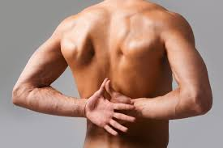

अनैच्छिक मांसपेशी

- अनैच्छिक मांसपेशी मुख्य रूप से आमाशय, भित्ति, गर्भाशय, पित्ताशय, मूत्राशय में पायी जाती हैं। इस लेख में मानव शरीर से संबंधित उल्लेख है।
- इनमें धारियाँ अनुपस्थित होती हैं। इसलिए इन्हें अनेखित पेशियाँ कहते हैं।
- इन पेशियों की गति पर हमारा नियन्त्रण नहीं होता है, इसीलिए इन्हें अनैच्छिक पेशियाँ कहते हैं।
- इनकी पेशी कोशिकाएँ तर्क्वाकार होती हैं। प्रत्येक पेशी तन्तु अशाखित एवं एककेन्द्रकीय होता है।
- ये पेशियाँ थकान महसूस नहीं करती हैं।
क्रियाविधि
अनैच्छिक पेशियाँ आन्तरांगों जैसे-आहारनाल, श्वसन अंग, उत्सर्जी अंगों में पायी जाती हैं। ये स्वतः गतियाँ करती हैं। जिससे ये अंग भी स्वतः ही गतियाँ करते हैं। जैसे-आहारनाल की क्रमाकुंचन गति, श्वसन गतियाँ आदि।